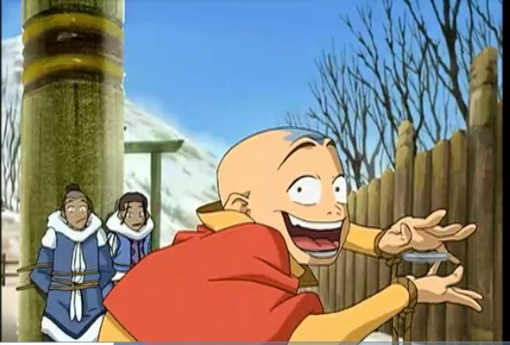
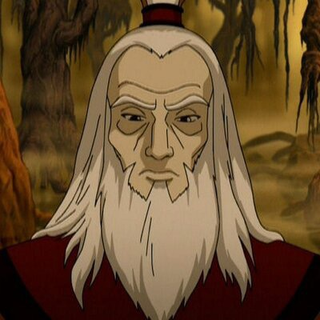
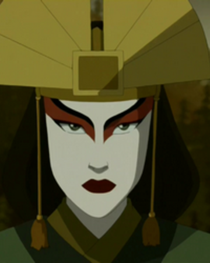
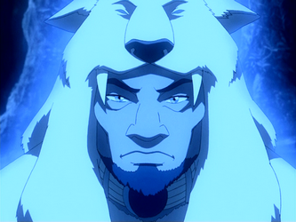
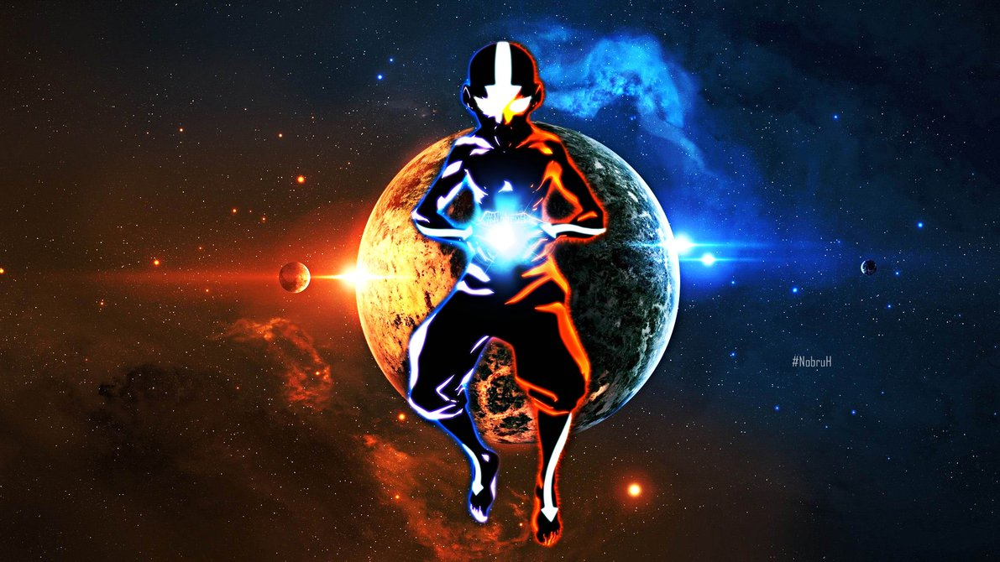

José Ángel Abarca Práctica 1

Avatar: La leyenda de Aang3 (en inglés, Avatar: The Last Airbender) es una serie animada creada por Michael Dante DiMartino y Bryan Konietzko, con Aaron Ehasz como escritor principal. Se emitió en Nickelodeon durante tres temporadas, desde febrero de 2005 hasta julio de 2008.Avatar está ambientada en un mundo de estilo asiático en el que algunas personas pueden manipular uno de los cuatro elementos (agua, tierra, fuego o aire) con variantes telequinéticas de las artes marciales chinas conocidas como "flexión".
El único individuo que puede doblar los cuatro elementos, el "Avatar", es responsable de mantener la armonía entre las cuatro naciones del mundo y sirve como puente entre el mundo espiritual y el mundo físico. El show se presenta en un estilo que combina un estilo anime con dibujos animados estadounidenses y se basa en las imágenes de la cultura principalmente del Este de Asia, con algunas influencias de Asia del Sur, el Nuevo Mundo, Inuit y Sireniki.
| Nombre | Nacionalidad | Apariencia | Historia |
| Korra | Tribu del Agua del Sur |  |
Korra es la encarnación actual del Avatar y la sucesora inmediata del Avatar Aang. Nacida y criada en la Tribu Agua del Sur, donde dominó Agua Control, Tierra Control y Fuego Control, fue reubicada después a Ciudad República para conseguir una habilidad similar con el Aire Control bajo la tutela y orientación de Tenzin con quien también esperaba superar su aversión a los aspectos espirituales de los artes de Control. Con la asistencia del espíritu de Aang, Korra adquirió la capacidad de hacer Energía Control y tras conectarse con sus vidas pasadas, adquirió la capacidad de entrar al Estado Avatar a su voluntad, marcando su transición a un Avatar completamente realizado. Sin embargo, después de su separación temporal con Raava durante la Convergencia Armónica del 171 DG, perdió la capacidad de conectarse con sus vidas pasadas. |
|---|---|---|---|
| Aang | Templo del Aire del Sur |  | El Avatar Aang era un Nómada Aire nacido en el 12 del AG y el Avatar durante el conflicto de un siglo de duración conocido como la Guerra de los Cien Años. Su predecesor inmediato era el Avatar Roku, y su sucesor inmediato es el Avatar Korra. Durante su vida, Aang, como todos los Avatares, era la única persona capaz de utilizar las cuatro disciplinas de Control: Aire Control, Agua Control, Tierra Control, y Fuego Control. También fue uno de un grupo selecto de Avatares, y uno de los primeros en muchos ciclos en aprender el arte antiguo de la Energía Control. Aang fue el primer Avatar visto utilizando esta técnica, y le pasó su conocimiento sobre esta antigua técnica al Avatar Korra. |
| Roku | Nación del Fuego |  | El Avatar Roku fue un Avatar nacido en la Nación del Fuego, sucesor inmediato del Avatar Kyoshi y predecesor del Avatar Aang. En forma de espíritu, Roku sirvió como una fuerza orientadora para Aang a lo largo de su búsqueda para poner fin a la Guerra de los Cien Años. Como noble de la Nación del Fuego, Roku conoció y se hizo gran amigo del Príncipe Sozin, y en un futuro, se casaría con una ciudadana de la alta clase de la Nación del Fuego llamada Ta Min, con quien tuvo una hija llamada Rina, quien a su vez dio a luz a una niña llamada Ursa. |
| Kyoshi | Reino Tierra |  | El Avatar Kyoshi fue un Avatar del Reino Tierra, nacida inmediatamente después del Avatar Kuruk y el Avatar anterior al Avatar Roku. Murió a la edad de 230 años, ganando el título del humano y Avatar más viejo conocidos. Asimismo, fue una mujer muy alta, y poseía los pies más grandes que cualquier Avatar. Kyoshi fue concebida por dos criminales, Jesa, quien era una renegada Nómada Aire y Hark, un ladrón proveniente de una familia empobrecida de actores del Reino Tierra. De ellos heredó el que más tarde se convertiría en su atuendo característico. Adoptando de su madre su tocado y sus abanicos de metal dorados y de su padre la forma de pintar su rostro. |
| Kuruk | Tribu del Agua del Norte |  | Kuruk fue un Avatar de la Tribu Agua, inmediatamente siguiente al Avatar Yangchen e inmediatamente anterior al Avatar Kyoshi. Nativo de la Tribu Agua del Norte, era un maestro poderoso y talentoso que soñaba con cambiar el mundo de los mortales para mejor uniendo a la gente y actuando sobre las bases establecidas por Yangchen. Sin embargo, sus esperanzas se vieron frustradas después de una confrontación brutal con un espíritu oscuro que resultó en una profunda corrupción espiritual que comenzó a enconarse dentro de él. Este choque fue solo el primero de su tipo, ya que un número creciente de espíritus oscuros comenzó a cruzar al mundo físico para causar destrucción. Para evitar que otros se vieran afectados por la misma enfermedad que lo atormentaba, Kuruk optó por enfrentar repetidamente a los seres airados por su cuenta. Sólo su mentor espiritual, Nyahitha, sabía acerca de los sacrificios y la soledad que soportó. |
"El Estado Avatar es un mecanismo de defensa, diseñado para fortalecerte con todas las habilidades y sabiduría de los antiguos Avatares, el brillo es una combinación de todas tus vidas pasadas que concentran tu energía en tu cuerpo. En Estado Avatar, eres sumamente poderoso, pero tambien eres muy vulnerable. Si tu mueres en Estado Avatar, el ciclo de reencarnación se rompería, y el Avatar dejaría de existir. "
El Avatar Wan fue el primer Avatar que vivió diez mil años antes de la época del Avatar Korra. Desterrado de su casa, aprendió a convivir con los espíritus, trabajando para lograr el equilibrio entre ellos y el resto de la humanidad, una búsqueda que, finalmente, le llevó a convertirse en el primer Avatar.
Viviendo en la pobreza, Wan robaba para sobrevivir y alimentar a sus amigos. Para lograr ese objetivo, lo hacía regularmente a la familia Chou. Sin embargo, un día, después de arrebatarle la comida de los Chou, fue perseguido por las calles de la ciudad por tres hermanos Chou. Se las arregló para escapar de ellos, al principio, abriéndose paso a través de los tejados, pero cuando se detuvo a comer, los hermanos lo alcanzaron. Wan intentó escapar de nuevo, pero fue derribado por uno de los hermanos y posteriormente acorralado. Le quitaron su saco de comida, y lo lanzaron al lodo con cerdos híbridos. Wan regresó a su casa del árbol donde estaban sus amigos Jaya y Yao, con quienes compartió la poca comida que había logrado salvar escondiéndola en su túnica. Regaló su lo que quedaba a varios animales hambrientos, lamentando su estilo de vida pobre, deseando poder vivir como el Chous. Sin embargo, ideó un plan para ganar más poder y así cambiar su vida.
Wan se unió a un grupo de cuatro cazadores que se disponían a abandonar la ciudad y aventurarse en la selva de los espíritus donde recolectarían alimentos para la ciudad. Aunque el cazador era escéptico al principio de dejar ir a Wan, le permitió que los acompañara ya que no había otros voluntarios. Como tal, el joven viajó con los cazadores para hacer frente al León Tortuga de Fuego, el guardián de la ciudad, para recibir el poder del Fuego Control que les permitía defenderse de los espíritus hostiles que viven en la selva. Poco después el grupo se establece, Wan fingió ser un miedoso, posteriormente, recibió la orden de regresar con la tortuga león para devolverle su capacidad de fuego control. Sin embargo, Wan desobedeció y volvió a la ciudad directamente, manteniendo el fuego. Con él, inspiró a varias personas más pobres a unirse a él en un allanamiento de la finca Chou. Aunque las cosas iban bien en un primer momento, los hermanos Chou pidieron refuerzos y Wan fue capturado y desenmascarado. Ver más

Aang
Katara
Zoka
Zuko

Toph
Azula